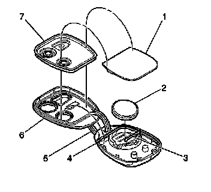

Keyless Entry Transmitter Battery: Service and Repair
TRANSMITTER BATTERY REPLACEMENT
REMOVAL PROCEDURE

1. Insert a small bladed tool, at the slot provided near the key ring hole (5), between the two halves (6, 4) of the transmitter case.
2. Twist the small bladed tool, between the two halves in order to separate the case.
3. Remove the battery (2) from the transmitter.
INSTALLATION PROCEDURE
1. Install the battery (2) with the positive side down into the transmitter.
2. Ensure the seal (7) is in position. Align the two halves of the case (6, 4), and snap the two halves together.
3. Verify the operation of the transmitter.